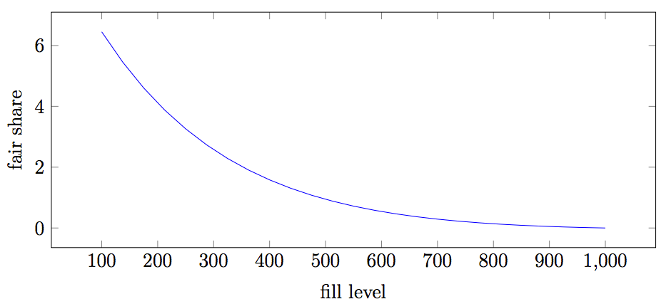

未承認トランザクション（スパムフィルタ）
新しいトランザクションが作成されノードに到達すると、ノードは以下を行います。
- そのトランザクションを未承認トランザクション(unconfirmed transaciton)としてキャッシュに置く
- （そのトランザクションが有効なものであれば）他のノードにブロードキャストする。
また、各ブロックチェーン同期ラウンドごとに、ある種のポーリングを行う仕組みがあります。 これにより7890番ポートを開放していない（したがって、ブロードキャストされた内容を受け取れない）ノードが新しい未承認トランザクションの情報を受け取ることが可能になります。
トランザクション手数料が少ないと、ネットワークの働きを阻害することを目的としたトランザクションを悪意のある主体が大量に発行し、ネットワークが溢れかえる危険性があります。 したがってノードが処理する未承認トランザクションの数には上限がなくてはなりません。
ネットワークがそのようなスパミングを受けているときでも、普通のユーザーがトランザクションを行えるようにする必要があるので、 ノードが受理する未承認トランザクションの数を愚直に制限するというのではうまくいきません。 また、攻撃者はアカウントを自由に作成できるので、アカウントごとに未承認トランザクションの数を制限するというのでもうまく行きません。
NEMではより賢い方法でフィルタリングが行われています。組み込みのスパムフィルタがトランザクションを受理すべきか拒否するべきかを自動で判断するのです。 このスパムフィルタは以下のように動作します。
- 未承認トランザクションのキャッシュ領域が1000スロット分あると想定する
- 埋まっているのが120スロットまでならば、どのトランザクションも拒否しない
- 120以上が埋まっていて、署名者Aの未承認トランザクションが来た場合、アカウントの公正割当分(fair share)は以下のようにして計算されます。
Aの占めるがスロットが公正割当分より少なければ、新しい未承認トランザクションは受理されます。
自分の意志でトランザクション手数料を上げることで、新規トランザクションが受理される可能性を高めることができる点がポイントです。
図3は、Effective importanceが1%の際の、埋まっているスロットの数(fill level)と公正割当分との関係をグラフにしたものです。
たくさんのアカウントを使用すると、個々のアカウントの重要度は低下します。 トランザクション手数料を上げることで攻撃をすることは可能ですが、当然攻撃者の資産は霧散します。
図3
Effective importanceが1%の際の公正割当分
